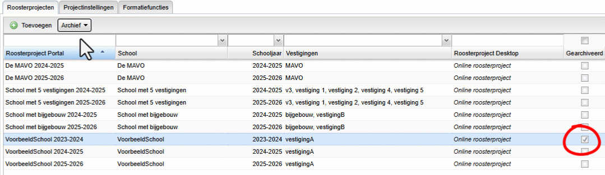
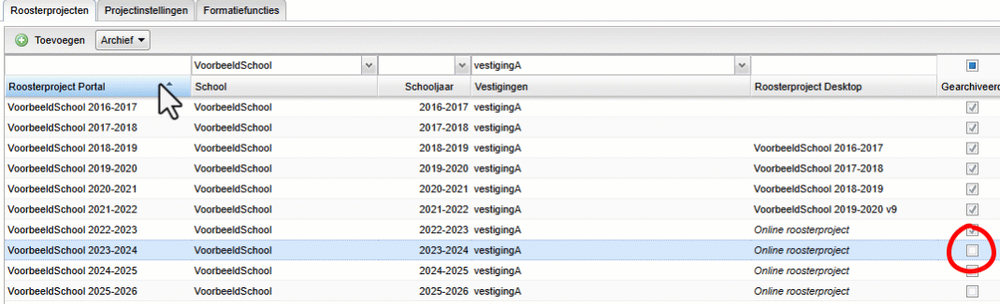
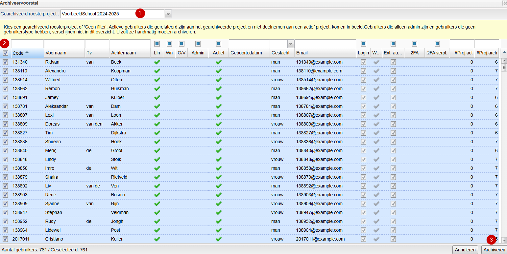

Archiveren en verwijderen van een roosterproject
in Roostervoorbereiding
Ieder schooljaar maakt u een nieuw roosterproject aan. De lijst met projecten wordt daarmee steeds langer. Er zijn in het portal veel schermen waar u een roosterproject kunt selecteren. Wij raden aan om uw oude roosterproject(en) te archiveren. Dit zorgt voor een overzichtelijk portal.
Als u een project hebt gearchiveerd is het eveneens mogelijk de gebruikers op te ruimen. Hierdoor houdt u de gebruikerslijst beperkt tot alleen degenen die in het huidige schooljaar actief of gearchiveerd zijn.
Op deze pagina beschrijven we de stappen die u moet doorlopen om uw roosterproject te archiveren en uw lijst van gebruikers op te schonen.
Stap 1: het archiveren van een roosterproject
De allereerste stap die u moet zetten is het daadwerkelijk archiveren van uw oude roosterproject. Ga naar Beheer > Roosterprojecten. Hier ziet u de lijst met alle roosterprojecten uit uw portal.
- Selecteer het project dat u wilt archiveren. De regel wordt nu lichtblauw.
- Klik vervolgens op de knop
en kies voor . - U ziet nu in rechts in de kolom Actief het vinkje verdwijnen.

Als u de pagina ververst, is het gearchiveerde project niet meer zichtbaar. Door te klikken in het vakje boven de kolom Gearchiveerd verschijnt uw gearchiveerde project.
Warning
Kies ervoor om een roosterproject te archiveren als het schooljaar echt is afgelopen en het nieuwe schooljaar gestart is.
Het terugplaatsen van een roosterproject
Mocht u onverhoopt een (verkeerd) roosterproject hebben gearchiveerd, dan kunt u deze eenvoudig weer terugplaatsen:
- Klik het vinkje in de kolom Actief aan, zorg dat je het roosterproject ziet en selecteer het verkeerd gearchiveerde roosterproject.
- Klik op de knop
en kies voor .

Stap 2: het opschonen van de gebruikerslijst
Nadat u uw roosterproject hebt gearchiveerd, is het raadzaam de lijst met gebruikers op te schonen. Nadat een schooljaar is afgelopen zijn er veel leerlingen en/of docenten die de school hebben verlaten en die niet meer als gebruikers actief zullen zijn in een nieuw schooljaar.
Om de lijst met gebruikers schoon te houden is het mogelijk om oude gebruikers te archiveren:
- Ga naar Beheer > Gebruikers.
- Klik op de knop
en vervolgens op "Archiveervoorstel". - Kies vervolgens een gearchiveerd roosterproject.
- Er verschijnt nu een lijst met te archiveren gebruikers.
- U selecteert in één keer alle te archiveren gebruikers door links het lege hokje in de kolomkop aan te vinken.
- Klik op de knop
.

Het verwijderen van een roosterproject
U kunt een roosterproject ook definitief verwijderen. Houdt u er rekening mee dat deze actie onomkeerbaar is en u het roosterproject definitief verwijdert.
Bewaartermijn
Bij Beheer > Admin-paneel > Instellingen > Privacy en AVG stelt u een bewaartermijn in. Deze staat standaard ingesteld op 7 jaar, maar kunt u zelf aanpassen. Als u een verwijdervoorstel van uw roosterprojecten opvraagt, krijgt u alle roosterprojecten die gearchiveerd zijn en ouder zijn dan de door u ingestelde bewaartermijn.
Roosterproject verwijderen
Een roosterproject verwijderen doet u bij Beheer > Roosterprojecten. U doorloopt daarvoor de volgende stappen:
- Klik op de knop
. - Kies voor de optie
. - Selecteer het roosterproject dat u wilt verwijderen.
- Klik op
om het roosterproject definitief te verwijderen.
Weet u al welk roosterproject u wilt verwijderen? Dan kunt u dat ook doen zonder het verwijdervoorstel.
- Selecteer het roosterproject dat u wilt verwijderen.
- Klik op de knop
. - Klik op
om het roosterproject definitief te verwijderen.
U kunt alleen roosterprojecten verwijderen die minimaal één week geleden gearchiveerd zijn. Dit is een beveiliging tegen het onbedoeld verwijderen van een roosterproject. Deze actie is namelijk onomkeerbaar. Uitzondering hierop zijn roosterprojecten die in de toekomst liggen. Deze projecten kunt u verwijderen als zij minimaal 30 minuten geleden gearchiveerd zijn.
Volgende pagina: Projectinstellingen